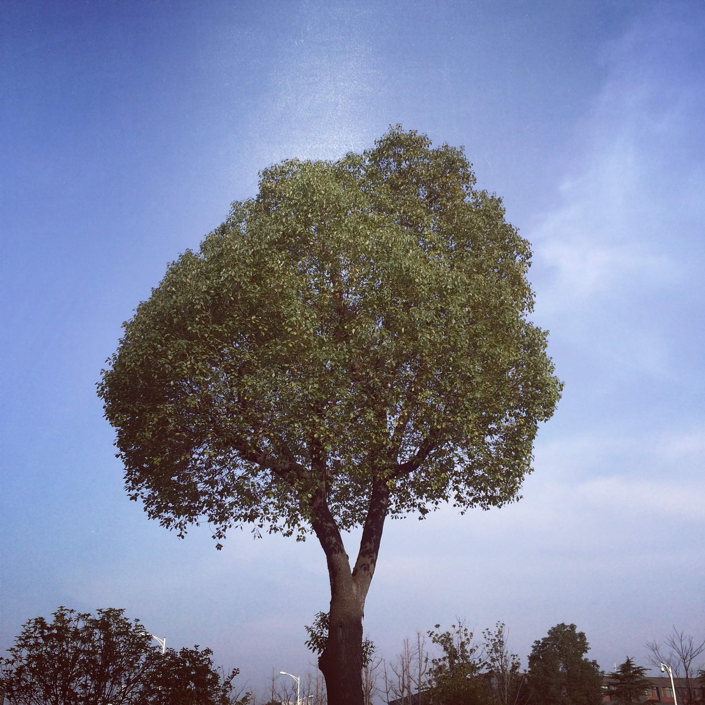

今天开始正式写博客。恰逢植树节，以此为题。
关于博客，很早很早以前就曾写过。那时大概0607年，从百度空间开始。一开始只是一些心情随笔，现在回过头看，只道当时真年轻！那段时期持续的时间不长，原因是自己的注意力从文字转移到博客的界面上。瞎捣鼓了一通后，反而没了写字的心性，便以此作罢。
再之后，大概09年，偶然接触了Google Reader（致我们终将逝去的青春），然后见到了太多的独立博客，那颗平静的心再次骚动。从Blogger开始，到自己找空间，找域名，利用wordpress建站，修改网站主题，最后网站建好了。这其中的喜悦是有的。但故事的结局是，博客仅仅写了一篇= = ……，现在想来，大概原因有以下几点：
不清楚自己写博客的初衷，或者说，驱动力并非源自在博客上散发自己的想法，而是独立建站的那种很cool的感觉，所以当网站建好，那股劲过去了，也就失去了源动力。（需求不清晰）
见了太多的珠玉在前，反而缺少了下笔的勇气，通俗点讲就是，我怎么忍心让我这一坨文字去瞎了这世界的眼睛。现在想想，简直天真得善良。这世界瞧不瞧得见你还两说，咋就开始担心会破坏地球安宁了呢~
还没准备好。或许这是根本的原因。
到了11年末，接触了技术，发现了太多大牛的技术博客，又开始了不安分，不过估摸着还是由于上面三个原因，一直没行动。转眼谁家小孩都从呱呱落地到开始上幼稚园，我还是一笔未动。中间于去年5月建了这个博客，但仍处于准备中= =，其实自己也不知道在准备着啥。
到了今天，离建站好像差不多10个月吧，这个年龄段的小孩估摸着也正处于开始说话的阶段，而这个博客，也应该是时候不留白了。
至于这个应该是时候从何得来（说白了，就是为啥现在想开始写文章了:D），几个原因吧：
我想和这个和这个世界谈谈。这话这句号有点让人恐高~ 降低点格调的说法就是，我想谈谈，然后假装整个世界都在听我扯，至于到底如何，那就如何吧~
好记性不如烂笔头。有些想法、有些感悟、有些经验总得记下来，不然过段时间被新事物冲刷了就忘了，以后再想，又得从头来过，何必浪费大好时光，况且还有种从前回忆被哈士奇叼走的挫败感。
我已经冥冥中浪费了和一批小孩子们说这个博客年龄比你们还大的大好装×机会了，不能再浪费另一批了！
吾有一怀表，曰情。
最后是关于博客的内容，大体是关于技术、生活上的一些感想吧，当然也不会拘泥于此，总之想谈的、想说的都会写，不局限，不约束。
我想种一棵参天大树！